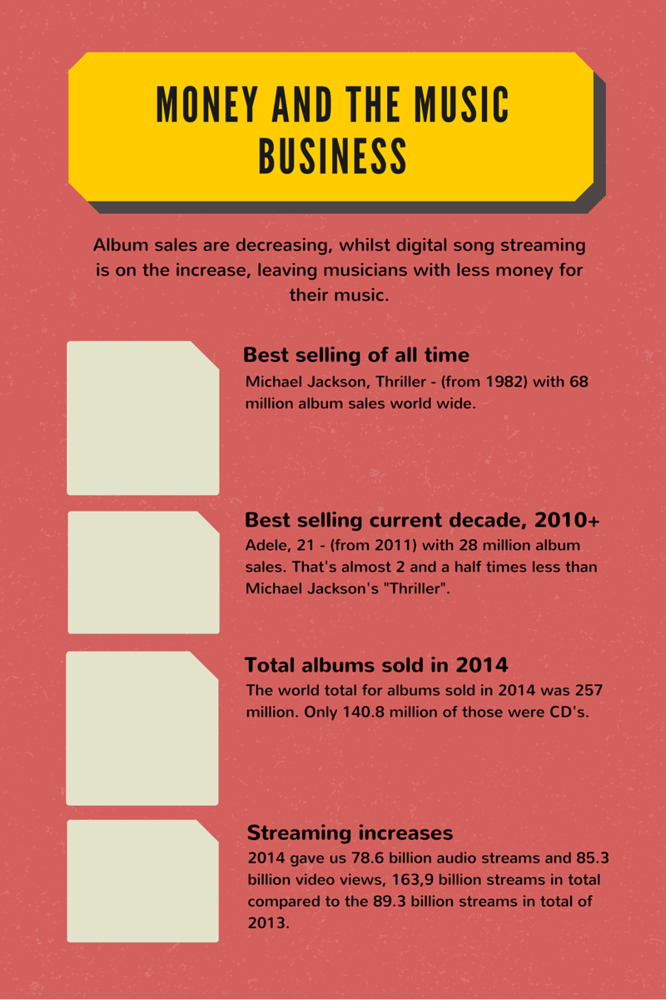
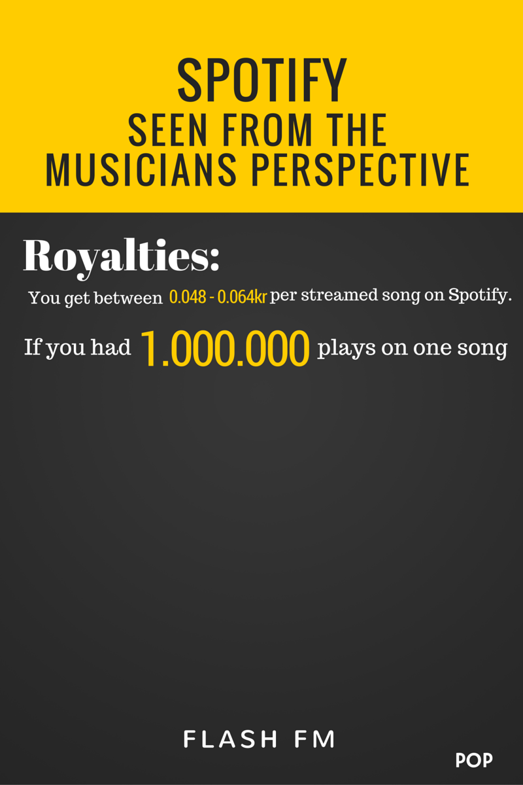

Uppgift B_5 - Infographic
Detta var min grundläggande skiss för projektet. Jag ville ha en stor topp på sidan nästan som det vore en bild eller en "slide" i till exempel PowerPoint.
Det var härifrån jag hittade mina fonter, då jag använde mig utav ett program som heter "Canva". Här är länk till Canva https://www.canva.com/
Uppgift B_3 - Individuell Reflektion
Jonatan Östling - 2015-11-20
Vår grupp var väldigt splittrad, och jag påbörjade arbetet i början av november. Jag kom på namnet ”Code-Ninjas” och beslöt mig för att göra en logga på just det namnet. Jag hade en person som kunde säga vad han tyckte om det jag hade gjort, så med ett ”det funkar” i ryggen började jag med att skapa designen till sidan på ”moqups.com”.
Jag började hitta inspiration genom att söka runt på hemsidor efter snygga fonter som eventuellt passade ihop. Hämtade det mesta av min inspiration från ”http://www.webbinsuranceagency.com/”, jag gillade enkelheten och de simpla färgerna och hur de gick ihop med varandra – och det var där min tanke om hur hemsidan skulle se ut började. Jag skrev ner två stycken fonter: ”Montserrat” och ”Droid Sans” då jag tyckte att de gick bra ihop, ganska avrundade och stiliga.
Sedan bestämde jag färgpaletten som blev #232323 (gråsvart) och #C3BB38 (gul-ish). När jag hade de två dominanta färgerna, delade jag upp sidan i olika stycken utefter vilken content som jag ville skulle fyllas i var. Sedan skapade jag ett projekt i ”trello.com” där jag försökte bryta ner min mockup i olika steg, allt för att göra det lättare att komma igång. Delade upp det i småsaker som bara tog några minuter att göra klart, och som gjorde att man efter bara några stycken hade en stomme att börja programmera på.
Efter det skapade jag ett repository i GitHub, lade till alla fonter och började programmera. Jag ville ha en simpel design där man snabbt och enkelt kunde navigera mellan sidorna, och ville inte ha för mycket överflödig information eller designstruktur. Enkelhet var det jag satsade på när jag började.
De problem som uppstod skulle jag vilja säga var att jag gjorde hela grunden och allting helt själv, jag försökte hela tiden få gruppen att involvera sig men det var väldigt svårt att få någon att faktiskt engagera sig och svara på det jag skrivit i Slack. Två personer laddade upp sina logo-designer när sidan redan var påbörjad och rätt långt kommen.
Jag försökte arbeta med så mycket scrum som möjligt, genom att hela tiden försöka stämma av med gruppen och länka vart jag var i processen och säga åt folk att hitta någonting att jobba med. Till slut började en i gruppen lägga ner grunden till vår footer som jag hade väntat med att börja på. Det blev lite problematiskt med vår versionshantering då det som denne person kodat försvann efter ett antal commits, så jag fick backtracka i commitsen tills jag hittade den kod som fortfarande fungerade. Jag hittade rätt bit kod, klistrade in den och gjorde den fungerande och lade till ytterligare design som funkade med sidan i sin helhet.
Någonting som jag kan lära mig av denna uppgift är att, det tar inte lång tid att börja med ett projekt. Även om man är lite vilsen och inte riktigt vet hur man ska börja, så är det bra att bara ge sig in i det, och försöka lista ut allting när man väl är igång. En del googlingar och logiskt tänkande kommer man långt med.
Det tar som sagt inte lång tid att komma igång med ett projekt, men det som jag lärt mig tar lång tid, är att få alla smådetaljer rätt, och att få allting fungerande. Därför är det bättre att börja i tid, så man utan stress kan spendera merparten av sin tid med att få alla smådetaljer rätt.
Uppgift B_2
Jag har lagt upp uppgift B_2 på denna DPY. Länk till min skiss finns här: Ta mig till skissen!
Länk till HTML dokumentet och CSS dokumenten finns här: Ta mig till HTML-dokumentet med mera!
CSS filen i B_2 är helt 100% validerad och inga problem uppstod. Jag har försökt validera HTML-dokumentet från uppgift B_1 så gott det går. Detta har inte haft någon inverkan på uppgift B_2.
The front end developer
A recent research on how it is to work as a front end developer, follows the agile web agency Wasabi web based in Stockholm, as they work closely with companies to tailor a website or application to increase revenues and gaining’s. Their work varies from women’s training programs to websites for event arenas. In both these examples the customers have had increased sales, registrations, more visits and overall activities on their sites.

The picture above is an example of what Wasabi web have done to overhaul a website to make it more attractive and inviting.
Much of this simply has to do with Wasabi web’s way of updating the layout and design of said websites. Using the latest design language that includes large pictures, stylish and minimalistic text boxes, saturated and warm colors, and an overall focus on making it easy to find the information that you want. A goal is to minimize the amount of mouse clicks you need to navigate through the page.
Creating a good looking website is tough work, since it’s always easy for a normal user to say whether or not a website is inviting or repulsive. For the most part, you hear the bad things more often than you hear the good.
We asked the staff at Wasabi web if they could answer any questions regarding their company, the experiences they have had and what it means to work as a front end developer, but sadly the people at Wasabi web just got in a new order of work – so they won’t be able to answer anything just yet.
The biggest challenge for the front end developer however, is the way how design trends changes constantly. Not only are there constant changes in the design department, but the software and techniques that are being used changes as well. The things that were learned last year could just as well be outdated the next year, and be replaced by something that makes the programming easier and functions more accessible.
There is no shortage of work for the front end developer, because most companies nowadays needs a home. A website for their customers to visit and order products, acquire information on products, or simply just to contact the company on good or bad intentions.

In the image above you see how Wasabi web have updated this product window, highlighting where you press to buy said product, thus increasing the chances of a customer buying the product.
The front end developers at Wasabi web are the people that are responsible for what you see and interact with on their websites. That search field up top for example, or the little graphic that displays when you click on a chat window. In comparison, the back end developers work with everything that is behind the scenes. For example, how that search field up top that you pressed on connects to the data base, check if the word you entered exists in the database, gets the relevant information and spits it back out onto the screen through multiple connections between documents in the code.
Because of the changing climate that the programmers work in, they need something to keep it all together. For this Wasabi web are using the “Agile software development” method, used by many of the largest companies in the world, like Google – to name one of them. This is a way of working that focuses on adaptive planning, adapting to change, early delivery of products and much more. Short meetings of 5 to 15 minutes are held every morning called “Stand-up meetings” where everyone answers three key questions. The first one is “What did I accomplish yesterday?”, the second one is “What will I do today?” and the third one is “What obstacles are impending my progress?”. These meetings are essential for the whole team to be on the same page, and to come over to someone and help with any problems they might have stumbled upon.
The “agile software development” method is a way of working that mostly focuses on working closely with your customer, trying to fulfill their demands. Short snippets of the work are sent to the customer a few times a week to keep them updated on their demands, as well as the developers’ progress towards certain goals. Even if the programmers are hit by serious delays and they are behind on delivery, the motto is always to keep their customer updated so that changes doesn’t come as a shock, and to deliver a working product rather than a good looking nonworking product.
This has been a look into the company Wasabi web, their front end developers and what that work title is all about.